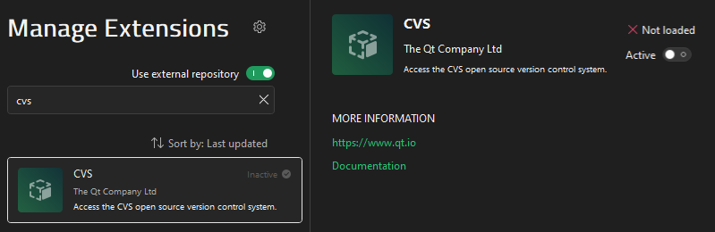

Activate extensions
In the Extensions mode, you can activate installed extensions to use them.
New extensions are often introduced as experimental extensions to let you try them out before they are fully supported. You must activate them to use them. By default, all the extensions that an extension depends on are loaded.
You can also deactivate extensions that you do not use, to streamline Qt Creator. If you deactivate an extension, Qt Creator asks you to deactivate all extensions that depend on it. This might lead to some features not working properly. Further, the extensions are not automatically loaded if you activate the first extension again.
To activate extensions:
- Go to Extensions.

- Select an inactive extension.
- Select Active.
- Select Restart Now to restart Qt Creator and load the extension.
See also Install extensions and Manage extensions.